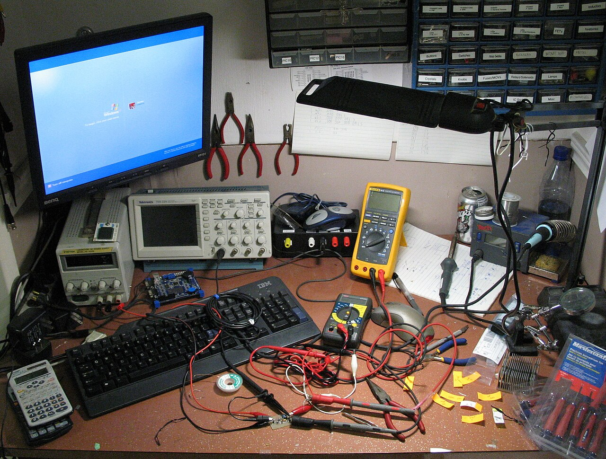

Приёмка и закупки / SUP
Снабжение Гавайца
Чего не хватает на складе и сколько за это платят. Комплекты разложены по ведомостям.
- Сверь список
- Собери припасы
- Сдай через ноутбук
Карточки заказов
Базовые данные заказов. Новые предложения открываются через доску в ноутбуке; условия, количество предметов и состояние сверяются с текущим сохранением.
SUP / 01
Паёк для станции
Собери запас еды и воды для стойки Гавайца.
- Хлеб × 6
- Консервы × 4
- Питьевая вода × 5
Награда 6800 руб.
SUP / 02
Полевые медикаменты
На станции заканчиваются перевязочные средства и антирад.
- Бинты × 8
- Аптечки × 4
- Антирад × 2
Награда 12500 руб.
SUP / 03
Три калибра
Гаваец принимает только полные коробки патронов.
- Коробки 5,45 x 39 FMJ × 4
- Коробки 5,56 x 45 FMJ × 4
- Коробки 12 x 70, картечь × 3
Награда 10500 руб.
SUP / 04
Запас на долгую смену
5 консервов, 6 бутылок питьевой воды и 2 аптечки. Состояние предметов не ниже 40%.
Награда 11 800 руб.
SUP / 05
Перевязка и боезапас
10 бинтов, 4 антирада и 3 полные коробки патронов 9×18. Состояние предметов не ниже 40%.
Награда 14 300 руб.